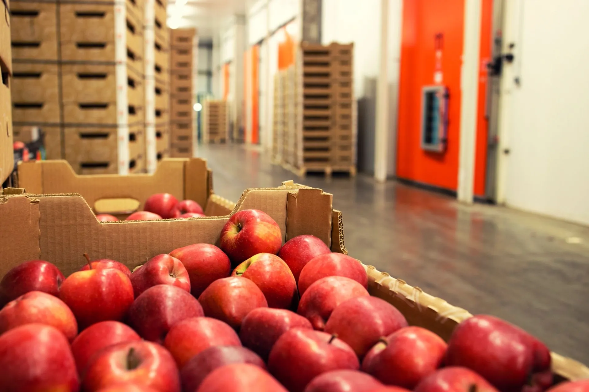

Our story
A trusted service our partners rely on.
Fiesta Fresh was established in 2024 as a dynamic fresh produce trading business, formed to meet the evolving needs of modern food supply chains by combining deep local market insight with global sourcing capacity.
We publicly launched in January 2025, backed by Dole Africa Holdings alongside a board of independent fresh produce industry specialists — giving us both the scale of a global player and the agility of a founder-led business.
